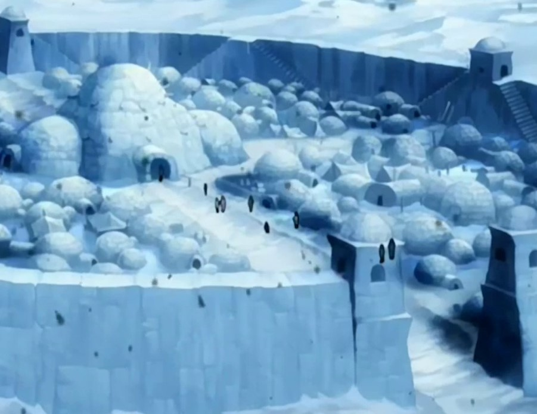

You decided to go to the Southern Water Tribe to learn how to heal because it was closer to the swamp and your journey would be quicker allowing you to come back just in time to save more people from your tribe who were sick or injured. You boarded a ship to the Southern Water Tribe, and once you arrived it was like nothing you had ever seen. It was so cold and there was snow everywhere. There were no trees or vines in sight, and people did not live in wooden huts. They lived in these circular structures called igloos. You were a little frightened because this was the first time you had let your home in the Swamp, but suddenly some creature started waddling over to you. It was a Koala Otter. You wondered what it was doing all the way here because they usually live in the Northern Water Tribe, however you felt comforted because it was kinda like you. In a new place all alone away from home. The Koala Otter stuck by you for the rest of your journey as it seemed like it needed comfort too.
You walked to the largest igloo in the tribe and told them why you were there and how you wanted to learn how to heal. The people of the Southern Water Tribe were very friendly and they immediately gave you warm clothes and a place to stay while you learned how to heal in the South Pole. You stayed there for about two weeks, learning the basics of healing and how to use water as a catalyst, redirecting energy paths around the body, concentrating more energy into a wounded area and allowing that area to heal at an accelerated rate. You made many new friends at the South Pole and formed a bond with your Koala Otter. You even got to tell the people of the Southern Water Tribe stories about the Foggy Swamp Tribe, to which they reacted in awe. Once you had mastered healing, it was time to head home to the Swamp. You were sad to go but you were grateful to them for sharing their knowledge and culture with you. Once you arrived back at the Swamp, you were able to heal the members of your tribe who were sick or injured and you could teach the benders of your tribe how to heal as well. Your Koala Otter even came to the Swamp with you and your tribe was dazzled by the creature. People would remember you as the first ever healer of the Foggy Swamp.